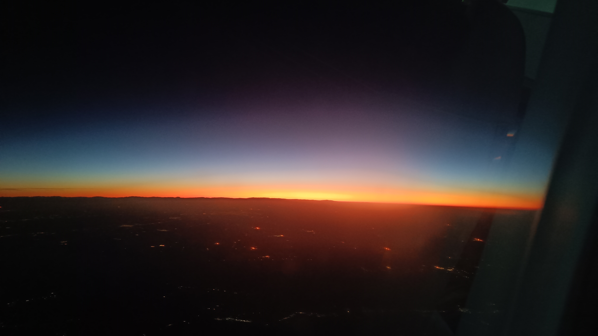

Siin on lugu minu järjekordse unistuse täitumisest - veeta kodumaisest külmast perioodist osa soojas. Elu premeerib julgust ja südame järgi tehtud valikuid väga armulikult.
Jooksvalt täienev reisikiri (1)
Jõudmine
Taimed ja kass asenduskodusse viidud, lapsed isa juures, maja talveks “konserveeritud” – meie 17h pikkune lennureis Sri Lankale võis alata! Külmataat on jaanuari alguseks peo kodumaal püsti pannud ja tulistab üle -10 kraadiseid temperatuure. Väljalennud hilinevad keeruliste talveolude tõttu – lennuki jäätumise ennetamiseks on vaja need jäätõrjevahendiga üle pritsida. Kui Riia lennujaamas pritsiti üle vaid tiivad (ikkagi teel sooja Dubaisse), siis Tallinn-Riia lennuk saab terves ulatuses sellise töötlemise osaliseks. Nii saamegi Riias lennukist välja sel kellaajal kui meie järgmine lennuk peaks hakkama juba stardijoone poole vurama. Õnneks on Dubaisse minejaid veelgi ja meid oodatakse ilusti ära. Lihtsamaks ei tee asjaolu, et peame reaalselt ühest lennujaama otsast teise kimama. Noh, tegelikult me võtsime seda kõike siiski rahulikult, sest näeme, et soojale maale minejate seas on ka peresid väikeste lastega, kellest ei eelda maratonijooksjaid, seega pole meilgi ju kiiret 😉
Kahjuks aga juhtub ühe perega sama lugu, mis juhtus Annil – kui ühel pereliikmel on reisi alustades passi kehtivuseks jäänud mitte 6 kuud vaid kõigest 5, siis nii see oodatud reis paraku katki jääbki… Hästi kahju.
Öö Air Balticu pardal möödub rahutult. Aksel soovib küll nunnusti “häid lennuki unenägusi”, aga jalad on rahutud, seedimine on tuksis, müra on suur, kord on külm, siis palav, õhk on kuiv, ruumi on vähe jne jne. See 6h möödub sisuliselt magamata ja aeg muudkui venib ja venib… Õnneks on mul aknaäärne koht, seega lõbustan end Iraagi öiste mäestike imetlemisega. No küll ikka on keerulised tingimused, kus elada, mõtlen ma - mägi mäe küjes kinni ja kõik puha kõrb. Ma usun samas, et me oleme sündinud täpselt sinna, kus me saame täpselt selliseid kogemusi, mida me oma hinge arenguks vajame. Taevas on selge, tähed säravad, tumedad vaod mägede külgedel moodustavad usjaid vorme – vaatan tuledesärakoldeid ja püüan ette kujutada, mismoodi sealsed elanikud oma igapäevaelu logistikat küll korraldavad. Põnevust tekitab seegi, et lendame üle Bagdadi! Imelik mõelda, et seal all elatakse nii teistsuguses reaalsuses, mida päriselt tegelikult ettegi ei kujuta…  Päikesetõus Iraani kohal Lõpuks hakkabki päike tõusma! Tugevad oranžikad toonid, kui mahlane ja kaunis vaatepilt! Ühe foto ma sellest ka teen, aga ülejäänud pildid jäävad kahvatuks, kuna lennukiaknad on ise hägused. Veel tunnike ja jõuamegi lõpuks sihtkohta, huh… Kui keset ööd üksteisele otsa vaatasime, siis silmad olid ikka paistes ja punased, aga imestame vastastikku, kuidas hommikuks on kõik jälle suht siledaks tõmmanud. Aga noh, eks need on ju needsamad väsinud silmad, mis seda “objektiivsust” kuulutavad… 🤭
Dubais avame hommikusöögiks enda uhke moonakoti. On aega teha arvutis tööliigutusi ja raamatutki lugeda. Sri Lankasse sõidame kohaliku uhkuse lennufirma Emirates pardal. Tõesti on luksuslik, ilus, mugav. Isegi toitu antakse - rikkalikult ja piletihinna sees. Magustoiduks on küpsise, šoksi ja soolakaramelli kastmes kooki – no mida veel tahta (mu lemmikud komponendid!)! Kuna meie kolmeses reas istuv tumedanahaline reisija jätab oma desserdi järgi, pakub stjuuardess seda mulle (sest olen just äsja seda sama kooki kiitnud 😋). Naudin täiega, aga pärast tõden, et oleks pidanud ilmselt keelduma… Rõõmustame aga juba ette, et koju tagasi lendame Emirates’iga lausa kaks üle 7-tunnist otsa.
Colombosse on õigeaegselt jõudnud ka meie pagas. Viisad tehtud (küll esialgu 30-ks päevaks ja 60 doltsi nägu) ja pääsemegi riiki. Meile on ilusti vastu tuldud nagu lubatud. Kohalikud SIM-id telodesse ja kiiresti meid ootavasse taksosse. Meie uduste ja väsinud peade jaoks käib kõik natuke liiga kiiresti, väike närv ja tüdimus poeb sisse ning kahtlustame juba ka seda, et meie taksojuht tahab meilt liiga palju raha saada selle ca pooletunnise sõidu eest. Taksod lihtsalt ongi teine hinnaklass ja oleme loomulikult tänulikud, et meie eest on asjad ära organiseeritud. Siinkohal ongi paslik panna kirja oma esimesed tänusõnad Sindy'le ja Ruchile, kes on olnud meile Sri Lanka giidideks meie enda kodumaal. Ja omamoodi olemegi me siin neist inspireerituna.
Esimesed kolm ööd olemegi Colombos. Vastuvõtt hotellis on väga viisakas, aga juba teist korda kui pean saabumisõhtul kaardiga makset teostama, unustan oma PIN-i (erinevad kaardid 😉). Siin on klahvistik ka täitsa tuksis! Muidu kui numbrid peast tahavad minna, on mustri osas lihasmälu, eks, aga siin sellele loota ei saanud. Õnneks on mul muudki abipaketid endale valmis mõeldud.
Tuba on lihtne ja ilmetu või nagu Toomas ütleb: “nagu Laulasmaa Spa 1994”, aga dušivesi on oi-kui-mõnus ja soe, konditsioneer toimib, voodi on tiptop. Tuba reklaamiti kui “kolmene koos rõduga”. Rõdu on imekitsas ja vaade pole pimedaga kohe üldse apetiitne 🫣 Õues mingid koerad klähvivad juba pikemat aega ja tegelikult akent lahti jätta ei tahaks, kuna kohe akende taga undab üks õhksoojuspump. Tahan uskuda, et me oleme nii väsinud, et miski meie õndsat und ei sega. Kõrvatroppide peale polnud ma ennetavalt üldse mõelnudki! Hotelli katuseterrassil peaks olema õdus restoran, kus serveeritakse ka hommikusööki, nii et ootan juba!

Uskumatu, aga meie saarerännak ongi alanud! 🇱🇰
- 👉 Lennupiletid: Saab piisava varuga ette ostetuna väga mõistliku raha eest.
- 👉 Lennufirma: Mugavuse huvides soovitame Emirates'i.
- 👉 Mobiilside: Lülita rändlus välja juba enne EL-ist lahkumist.
✍️ Kommenteeri või jaga oma mõtteid all!
Kommentaarid